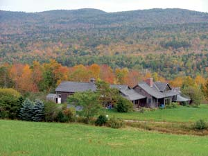
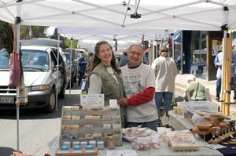
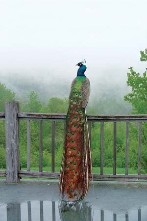
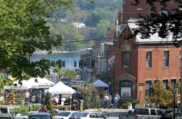
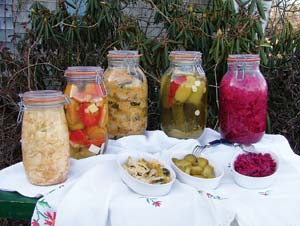
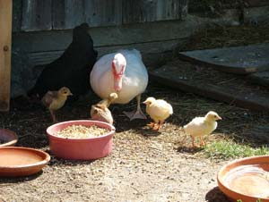
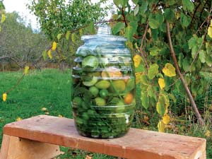
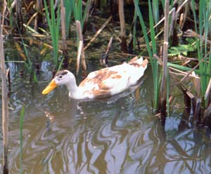
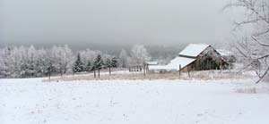

In 1997, Ana and Roy Antaki moved from corporate jobs in Kansas City, Kan., to a 150-acre former dairy farm, which they call Weeping Duck Farm, in Montville, Maine. The Antakis’ journey back to the land led them to discover a more satisfying, traditional way of life. Now they earn money selling handcrafted products at the local farmers market, including woodcrafts, personal care products, and homemade food items, such as veggie burgers and healthy fermented foods.
Ana was working for Hertz in New York City when she met Roy, who was employed by a trading company that transferred him there. Two months later, says Roy, he and Ana “met, got married, then started dating,” and they’re still dating after 30 years.
From New York, Roy was transferred to Kansas City, where he and Ana quickly saw what they’d heard environmentalists talking about: suburban sprawl and the destruction of wildlife habitat. “We decided that maybe we should live in a way that is less noxious to the planet; a much simpler way,” says Ana.
Their four years in suburban Kansas City, where neighborhood rules prohibited hanging out laundry and even growing tomatoes in the back yard, “were a blessing in a sense,” Roy says. “It made us realize that we wanted to get out of the rat race.” They sold everything (except their 15 exotic birds) and moved to Maine. “We were innocent enough that we moved in mid-January - we were lucky,” Roy says. They arrived at their farm just ahead of a snowstorm.
They didn’t know anyone in Maine at the time, but Ana had been to Camden before on business. “I thought Camden was the prettiest place I had ever seen,” she says. Later, when Ana read about legendary Maine homesteaders Helen and Scott Nearing (authors of The Good Life) and their pursuit of a simple, self-sufficient lifestyle, she thought, “Somebody else has thought about this, so I’m not nuts!”
They found that people in Maine were “very, very nice; still very down-to-earth.” Once they were settled, the Antakis began exploring ways to make a living with a home-based business.
Ana saw someone making soap at the annual Maine Organic Farmers and Gardeners Association Common Ground Country Fair, and decided to give it a try. “I’d never thought much about soap,” she says. “It’s one of those things that you just take for granted, right? The Fair soap looked so clean … I thought, I could make soap! It looks so simple!”
She went to a workshop on soap making, then came home and made her own. “You can’t make soap in small batches,” she explains. “Eventually you’re going to have soap for a large population.” She started selling her vegetarian soap made with olive oil through local stores, then at the local farmers market.
Next, the Antakis decided to try fermented foods, which was not surprising given Roy’s knowledge of winemaking (he studied oenology, the science of winemaking, in France), and the fact that he grew up “in the equivalent of the 18th century” with grandparents who still made everything from scratch, and stored food without using refrigeration or canning.
“We went the traditional route at first, with a chest freezer, canning equipment and a canning book,” Ana says. “The first summer, we were pickling, freezing and canning, then eating kind of flat, limp green beans from the freezer.”
Roy describes the canning and other preservation recipes they found through the U.S. Department of Agriculture (USDA): “Basically you kill the food, then when it’s dead, you make sure you kill it a second time.”
The Antakis thought there must be a better way. “We asked, ‘What did people do before electricity and sophisticated canning equipment?’” Ana says. “Somebody mentioned lacto-fermentation, and I said, ‘Milk?’ Then I realized it wasn’t that, but preservation using Lactobacillus bacteria.”
“Lactobacillus will create lactic acid out of sugar and transform the food,” Roy says. The acidic conditions then preserve the food without canning or freezing.
They read two books about lacto-fermentation, Keeping Food Fresh: Old World Techniques & Recipes and Wild Fermentation, then found more recipes in ethnic cookbooks and through a Montville neighbor.
After having good luck with cucumbers, they moved on to sauerkraut, green tomatoes and apples in brine. The sauerkraut was a great discovery for Ana, whose only other experience with sauerkraut was in New York schools.
“I found the stuff revolting! It smelled awful and had an awful appearance,” she says. “I didn’t understand how people ate it!” It wasn’t until she started making her own that Ana realized how superior homemade sauerkraut is to store-bought.
They’d already been making their own tofu, which is not a fermented product, so they decided to try tempeh, a fermented soy food, and found great success.
In addition, they had some fermented Japanese pickles, which were “really good and different from anything I had tasted,” Ana says. “They were pickled in miso (Japanese paste made with soybeans and fermented grains), and I figured the only way I was going to afford to have any quantity on hand was to learn how to make my own miso, which I did.” (See “How to Make Miso & Kimchi” below.)
Now, she and Roy also make lacto-fermented dilly beans, carrots, kimchi (spicy Korean pickled vegetables), pickled/fermented cucumbers and tomatoes, as well as apple cider, apple cider vinegar and hard cider-which Roy uses to make cider champagne. They also make beer and wine, but “we’re sober most of the time,” Roy jokes.
He also notes that their kimchi is “real, fermented kimchi, not overnight kimchi. Ours contains enough of the elements that facilitate digestion so that some of our customers keep buying it for their digestion.”
Ana also thinks this fermented, probiotic food is medicinal. “Some of my reading has convinced me that fermented foods are really superfoods,” she says. “You increase the nutritional value of food when you ferment it.” The Antakis think that “the most important thing is to have a functional digestive system. That seems to be the gateway to health,” Roy says. “Fermentation is basically what you could call pre-digestion.”
With vegetables available all year, fresh or fermented, the Antakis rarely shop for food. “The only things we buy at the supermarket are canning jar lids!” Ana quips. They also buy grains, beans and olive oil in bulk.
“The products we now sell came about just through our desire to find alternative ways of preserving food so it’s crisp and doesn’t consume energy,” Ana says. Their customers seem to appreciate their efforts, as the Antakis’ ever-busy booth at the Belfast farmers market attests.
Roy says he’s come full circle from his youth, when his mother and grandmother preserved foods. He also points out that, with the rising cost of energy, “We need to preserve that knowledge of low-tech food storage, because it’s going to be useful again.”
They may also be preserving health. Roy says he was a born vegetarian. “When I was a kid, I didn’t want to eat meat,” he says. Ana gave up meat after learning about the inhumane treatment of animals in some conventional livestock operations. Now she believes that the diet she and Roy follow is healthful as well as humane.
Ana is interested in the relationship between protein intake and cancer. She mentions work by T. Colin Campbell, of Cornell University, who found that children in the Philippines with more animal protein in their diets (children from affluent homes) had a higher incidence of liver cancer than poorer children who ate less protein.
Campbell then discovered a study from India on rats that were injected with cancer-causing aflatoxin. One group of rats was fed a 5 percent protein diet, the other got 20 percent protein. All the rats in the high protein group got cancer, while none in the lower protein group did. So Campbell conducted “The China Study” to test his theories by observing a very large, fairly homogenous human population in rural China, and found the same results: People who ate the most animal-based foods had the most chronic diseases. The Antakis’ decision to eat vegan was influenced by such findings.
The Antakis are satisfied with their move from corporate life to their Montville farm. “Money isn’t everything,” Roy says. “Money is actually a hindrance. When you try to make money just for the sake of making money, you always want more.”
With the pressures of the rat race far behind them, Roy and Ana now concentrate on ways to preserve their land. They look at their beautiful property and ask, “What can we do with it? Eventually somebody has to take over this place, and we’d like to keep it wild.” So they have an ongoing conversation about how to protect this piece of land and keep Zippy’s memorial thriving.
The Antakis make a variety of homemade fermented foods. Here are tips for making a couple of their favorites.
Miso. All misos are made with three ingredients: soybeans, koji and salt. Koji is the “substrate,” or fermentation medium. Rice or barley are fermented to become koji, which can be made from scratch or purchased at local health food stores. Ana purchases the cultures to ferment homemade koji from G.E.M. Cultures in California.
Rice Miso
13 ounces dry soybeans
11.1 ounces rice koji
9 tbsp sea salt
1 3/4 cups mixing liquid (from soybeans)
Soak soybeans overnight, then boil until beans are soft (about 3 hours), and save the liquid. Mix koji with soybeans and salt, then add liquid slowly to reach a consistency similar to peanut butter. Mash the miso.
This recipe will fit in a gallon-sized glass container. Before adding the miso, sprinkle sea salt on the container’s bottom and sides. Then sprinkle 1 teaspoon of salt on top of the miso, an important step that prevents contamination. To press miso during fermentation, fill quart-size plastic bags with 2 pounds of sand for weights. Put unbleached parchment paper directly on the miso, then add 3 to 4 sand weights, and cover the container with muslin. You should keep the miso in a cool (not cold), dark place. Make sure to date each batch. The storage time determines the type of miso made and its flavor, which begins sweet and deepens with age. Ferment up to 18 months. Makes about 6 cups.
Kimchi. This popular Korean food has healthy, probiotic properties. In addition to brine, there are two parts to the basic kimchi recipe: the vegetables and the seasonings.
Vegetables
Napa or similar cabbage or bok choy,cut into 2-inch pieces
1 pound daikon radishes or carrots, thinly sliced
Seasonings
2-inch-long piece fresh ginger root, minced
7 scallions cut into fine rounds (include the greens)
4 to 5 cloves fresh garlic, minced
Ground cayenne or hot Korean red pepper to taste
1 tsp sea salt, plus salt for the brine (see below)
The most important measurement is the brine’s proportion of water to sea salt. Measure enough water to completely cover the vegetables, then add 2 tablespoons and 2 teaspoons of sea salt for every 5 cups of water. Pour brine over the vegetables, and let sit at room temperature overnight. Use a weight, such as a dish, to keep the vegetables submerged below the brine.
The next day, drain the vegetables, saving the brine. Mix the seasonings in a bowl. Combine drained vegetables with seasonings in the fermentation container. The container should be large enough to hold all the ingredients, plus the brine, which should cover the mixture by about an inch. Weigh down the vegetables so they don’t rise above the liquid. To allow for expansion and prevent overflow, only fill the container to three-quarters capacity. (Fermentation creates carbon dioxide gas, visible as bubbles rising along the sides of the jar, which expands the volume of the bottle’s contents, and causes overflow.)
Ferment the kimchi at room temperature until most of the initial fermentation is complete. (You’ll know it’s fermenting when you see bubbles rising.) In summer, fermentation can be done in 3 days; in cooler autumn weather, it may take 2 weeks. Once the initial fermentation is complete, transfer the container to a cooler location, such as a root cellar or refrigerator. Regularly remove any surface mold, or white “fermentation flowers.” Makes about 3 quarts.
For more fermentation recipes, read Got Cabbage? Make Sauerkraut!, as well as Wild Fermentation by Sandor Ellix Katz.
Weeping Duck Farm sits on fields and woods that offer blueberries, blackberries and apples, as well as space for ducks, chickens and peacocks to roam. The farm’s name memorializes “little Zippy, a beloved pet duck who was killed defending his tiny flock when it was attacked by stray dogs,” says Ana Antaki, co-owner (with her husband Roy) of the farm.
The Antakis also memorialize Zippy’s “selfless, courageous spirit” by adopting ducks rescued by a licensed wildlife rehabilitator - some, unfortunately, crippled. At Weeping Duck Farm, these birds live out their natural life spans. Ducks and chickens freely move from their shed to a fenced yard, which protects them from predators. As vegans, the Antakis don’t eat eggs, but do sell them at the local farmers market.
|
 ANA ANTAKI Weeping Duck Farm sits on fields and woods that offer blueberries, blackberries and apples, as well as space for the Antaki’s ducks, chickens and peacocks to roam. |
 LYNN KARLIN Ana and Roy Antaki selling their homemade products at the farmers market. |
 ANA ANTAKI This majestic peacock is one of the many birds among Weeping Duck Farm’s permanent flock. |
|
 LYNN KARLIN The Belfast, Maine Farmers Market. |
 ANA ANTAKI You can prepare a variety of foods with lacto-fermentation, including (left to right) celeraic, green tomatoes, kimchi, cucumbers and red cabbage. |
 ANA ANTAKI The farm’s diverse bird family is epitomized by these baby peacock chicks. Their mother abandoned the nest, so Rosette, a Muscovy duck, hatched them. A bantam hen, Little Opal (shown in background), and a bantam rooster, Roostie, taught the chicks to feed. |
|
 ANA ANTAKI This 10 liter bottle of lacto-fermented green tomatoes requires maintenance to be sure the brine level remains constant, and any surface mold is removed. |
 ANA ANTAKI Zippy the duck. |
 ANA ANTAKI The barn at Weeping Duck Farm in winter. |